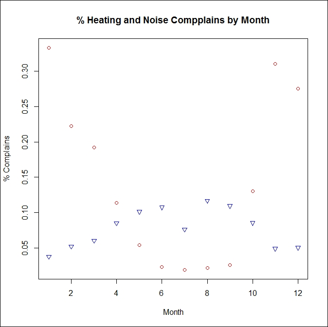
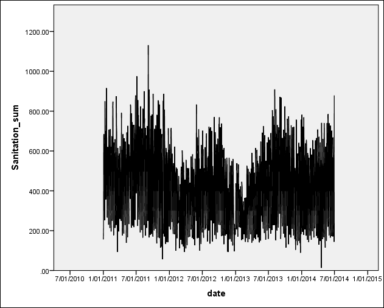
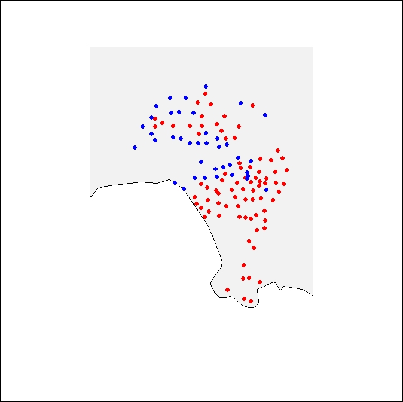
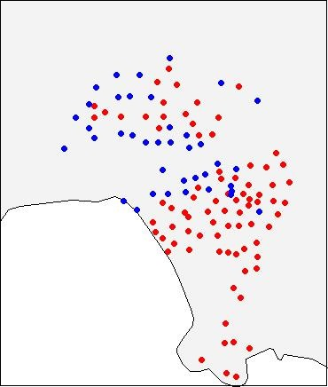

As before, after we have passed our model evaluation stage and decided to select the estimated and evaluated model as our final model, our next task is to interpret the results for the city management and technicians.
So, to serve the city governments and other interested civic organizations, we need to set our focus on further deriving results about big influencing variables and time series trends with our final models. Then, we need to work on interpretations as well as some visualizations as R provides many good visualization solutions.
In terms of finding out the features with the largest impact on the target feature, as you learned from the previous chapters, the random forest method is a good solution. Therefore, once our Zeppelin notebook is up, we should utilize some algorithms for randomForest, for which we, of course, need to recode our target feature into a binary one. Then, as we noted in previous chapters, such as in Chapter 8, Learning Analytics on Spark, the randomForest algorithm can give us a list of all the features as per their impacts on the target variable along with nice visualization graphs.
However, for this project, as we have a nice target feature variable with continuous values, the linear regression results also give us the needed insights directly. In other words, the features with larger coefficients in linear regression have a larger impact on the target feature. Another way of assessing predictors is to use the associated R squared, for which we usually go deep when we conduct feature selection. In other words, this task of finding out the biggest influencers may be performed together with the feature selection work, as described in Data and feature preparation section of this chapter.
As per our results, overall, we will find events and holidays as big influencers, followed by weekday versus weekend, and finally followed by weather:
Both the linear regression models and ARIMA models confirm similar results.
As discussed before, in Chapter 5, Risk Scoring on Spark, R has many special packages for us to assess the predictive features and also visualize them, for which readers are encouraged to explore more.
Users of our results, both from city governments and public user communities, are very interested in future trends; so, one of our important tasks is to visualize the trends as per our history data and forecasts.
Consider this example: we need to create a graph of the changing trends of heating-related service requests and noise-related service requests in NYC in 2013.
To produce this graph, we can use some simple code, as follows:
The following screenshot shows the output of the preceding code:

The preceding graph produced by our R notebook illustrates the changes over time in 2013 for, firstly, the noise-related service requests as denoted by blue triangles, and, secondly, heating-related service requests as denoted by red circles.
This graph shows a clear seasonal trend as there are a lot more requests for heating-related services in winter than in summer. As shown by this graph, there are a lot more noise-related service requests in summer than in winter.
Here's another example: a graph of sanitation requests from July 2010 to January 2015 in Los Angeles:

The preceding graph, also produced by our R notebook, shows a significant impact of seasons, but the trends may not be easily interpreted.
Let's take a look at yet another example: mapping out the high water usage areas per zip code in Los Angeles between 2012 and 2013.
In recent years, Los Angeles has been experiencing a water shortage problem, so the city government and several citizen groups are very interested in understanding the overall water usage as well as the impact of some of their interventions.
The following graph, again produced by our R notebook, identifies the high water usage per zip code zones denoted by blue dots:

For the preceding visualization, we used the following code:
As we can note here, we used a few packages, including mapdata, maptools, and scales to produce this graph.
So, as we experienced so far, R has many packages for visualization as well as forecasting, especially for time series data modeling. However, more may come soon for Spark MLlib deployment
One of the main purposes for this project is to produce good predictive models for the city to forecast the future service request volume on a daily basis per zip code using our developed regression models. This kind of forecasting is of value to various departments who use various kinds of software systems for decision making. As discussed before, MLlib supports model export to Predictive Model Markup Language (PMML). Therefore, we will export some developed models to PMML for this project.
In practice, the users of this project are more interested in rule-based decision making to use some of our insights and also in score-based decision making to evaluate their regional units.
Specifically, as for this project, the client is interested in applying our results to, firstly, decide when an alert may be sent out if the number of service requests forecasted is very high, for which rules should be established, and, secondly, develop scores and use these scores to rank regions, such as by zip code zones, so that the city could use these rankings to measure performance as well as to plan for the future.
Besides the preceding, clients are also interested in forecasting the services in general using time series models, for which R actually has a package called forecast that is ready to be used:
To sum it up, for our special tasks, we need to turn some of our results into rules and to produce some performance scores for the client.
The rules of sending out alerts
As discussed before, for R results, there are several tools to help extracting rules out from developed predictive models.
For the decision tree model developed to model, whether or not the number of service requests exceeds a certain level, we should use the rpart.utils R package, which can extract rules and export them in various formats, such as RODBC.
The rpart.rules.table(model1)* package returns an unpivoted table of variable values (factor levels) associated with each branch.
However, for this project, partially due to the issue of data incompleteness, we need to use some insights to derive rules directly. That is, we need to use the insights discussed in the last section. For example, we can do the following:
If a special event is to be held, our prediction will show certain service requests going up dramatically, and an alert will be sent out
If weather conditions change for a certain area, some special service request will go up so that an alert needs to be sent out
From an analytical perspective, we face the same issue here to minimize false alerts while ensuring adequate warning.
The city government had a high false alert ratio from their past rules, and as a result of this, too many alerts were sent out that became a burden and also caused a lot of resource wasting.
Therefore, by taking advantage of Spark's fast computing, we carefully produced rules, and for each rule, we supplied false positive ratios that helped the company utilize the rules.
Scores to rank city zones
With our regression and time series modeling in place, we have two ways to forecast the number of service requests for each zip code zone at any specific time in the future.
For time series modeling, as discussed, we can have the R package of forecast and use the following code:
With the regression models, we can use the estimated regression equations to perform the forecasting directly. Alternatively, we can use the following code:
Once we have the forecasted service request number in hand, one way of creating scores is using the request number divided by the maximum number.
As long as we obtain the scores, we can classify all the zip code zones into several categories and also illustrate them on a map to identify special zones for attention, such as in the following graph:



{kind=link}